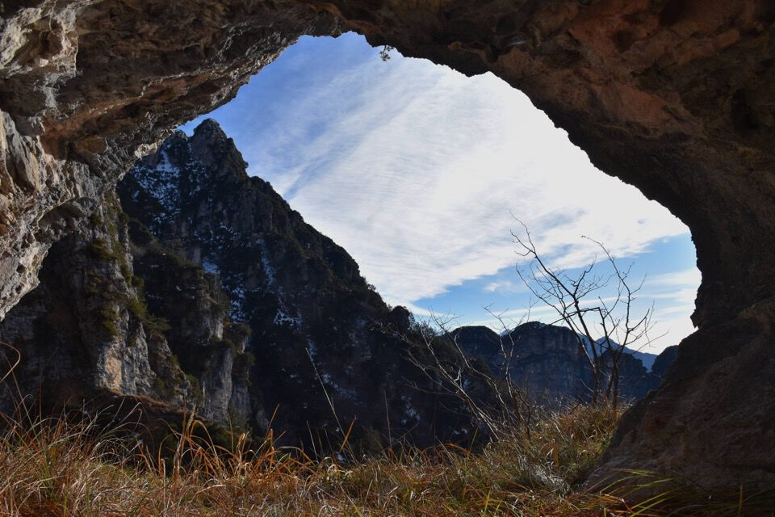
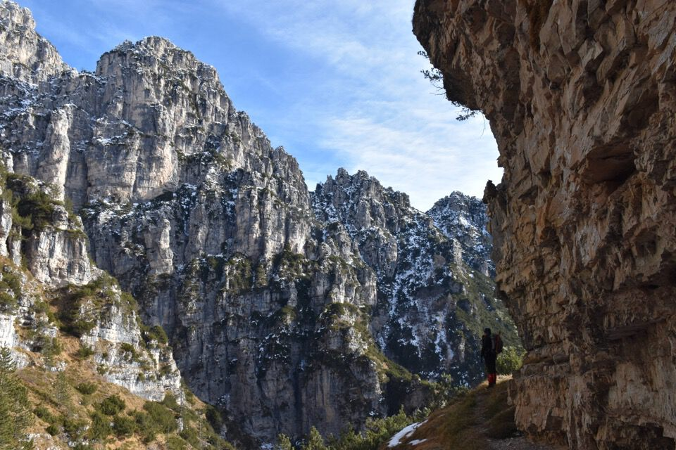

La val Pissandola: un luogo straordinario, fra i più belli che io abbia mai visitato.
Risalendo la val Sciarpenade di buon'ora.
La val Pissandola difesa ovunque da enormi salti.
I severi contrafforti del Col di Colle e del monte Barbano.
Macabri avvertimenti.
Questo qui c'avrà azzeccato la via?
Cenge tutte da esplorare.
Prati, pareti, cenge, canali: un mondo dove perdersi e trovare la propria via.
La forra terminale della val Pissandola: uno dei più bei luoghi che ho mai visto, complice il senso d'isolamento davvero totale.
Sulle mappe è scritto Pisandola ma ovviamente il toponimo è da pronunciare con la s sorda: non poteva essere altrimenti per una valle piena di cascate (pissa); dunque uso la grafia Pissandola.
La Torre Vacialissa domina sempre la scena.
 Ma la sorpresa più bella delle Pale del Bressa sono i suoi antri, ben visibili dal monte Barbano (qui sotto foto di S. Morassutto).
Eccone un'altro ancora poco sotto la cima.
Finalmente in cima alla q1779; unica firma quella di Luca B. — a cui si deve la riscoperta della val Pissandola — che è salito qui nel 2020, e poi di nuovo lui nel 2023 con Jenny; per dare un'idea dei tempi, loro hanno scritto di averci messo 7 ore in salita, conoscendo già la strada.
Verso la Vacalizza che qui si confonde con le rocce dell'ominima Torre.
Verso Pian Pinedo.
Il severo guardiano della forcella fra Torre Vacalizza e Punta Pissandola.
Le selvagge crode che chiudono la val Pissandola: Torre Vacalizza e Punta Pissandola.
La Forza della Natura.
La val Pissandola con tutti i suoi antri ci inviterebbe a restare qui, a goderci con calma questo ambiente straordinario, ma non possiamo. Un ultimo sguardo di meraviglia, e via giù.
Partiti sotto le stelle, torniamo alla macchina sotto le stelle.
L'oronimo «Pale del Bressa» è chiaramente un antroponimo: Bressa è cognome assai diffuso a Cimolais. A fine ottocento l'osteria La Rosa di Osvaldo Bressa era un gradito punto d'appoggio per i primi alpinisti delle Clautane, quali Ferrucci, Kugy, Glanvell, von Saar, Cozzi e Zanutti (cfr. Mario Tomadini, Guide alpine, portatori e portatrici nelle Prealpi Clautane (1874-1915), 2025).